SON SEFER 23:59 · 5 ŞEHİR · 30 HAT · TEK ELLE OYNA
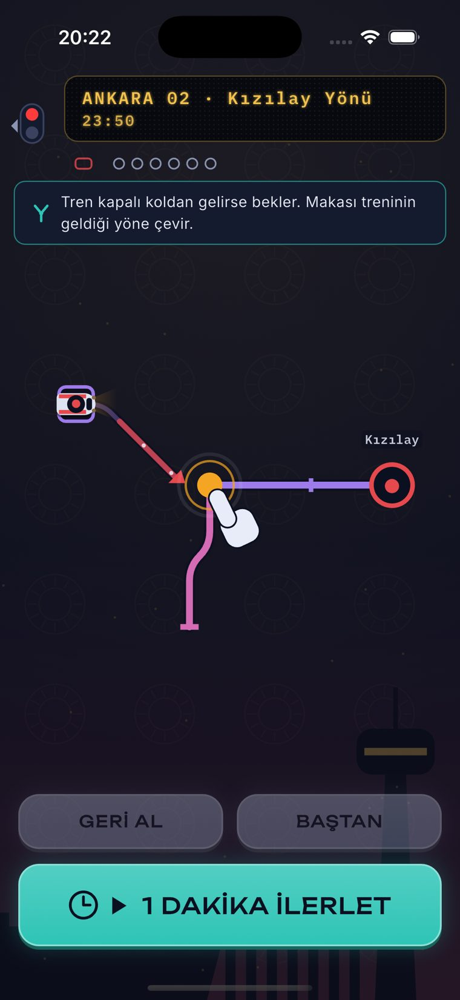
Ankara 02 · öğretici el makası gösteriyor
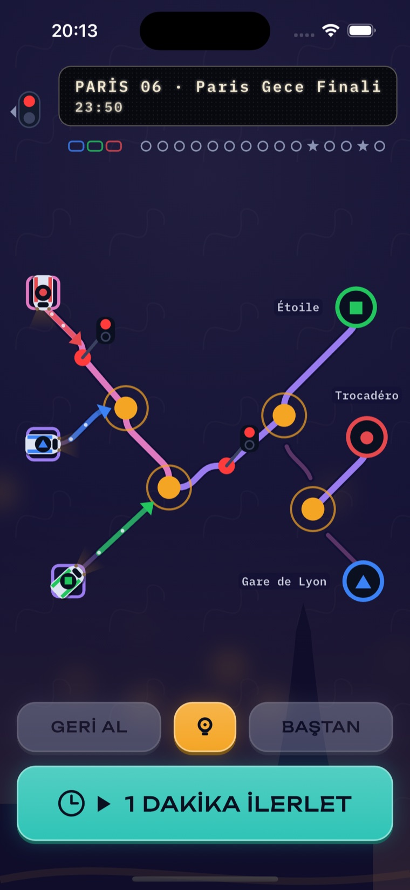
Paris 06 · üç tren, iki sinyal, gece finali
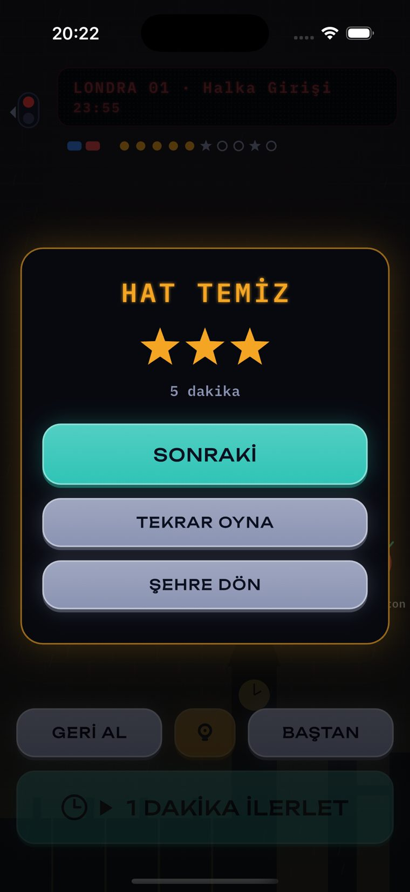
Londra 01 · “HAT TEMİZ”, üç yıldız
Bir cümleyle
Gece yarısı, metroda son sefer. Sistemde kalan bütün trenleri doğru son durağa ulaştırman gerekiyor.
Trenleri sen sürmüyorsun: her dakika tek bir makası ya da sinyali değiştiriyor, sonra
“1 DAKİKA İLERLET”e basıyorsun ve bütün trenler aynı anda bir durak ilerliyor.
30el yapımı bölüm
5şehir: Ankara → Moskova
0reklam, hesap, internet
1el yeter, sıra tabanlı
SWIPEOUT: LAST TRAIN · TANITIM VE PAZARLAMA DOSYASIKASIM 2026 · 1/6
Oyun · nasıl oynanır
Refleks değil, plan. Üç hareket, sonsuz düşünme.
Oyunun tamamı tek bir döngü: seç → önce gör → ilerlet. Kurallar 20 saniyede öğrenilir, ama tek bir
kararın üç ayrı treni etkilediğini fark ettiğin an oyun asıl başlar.
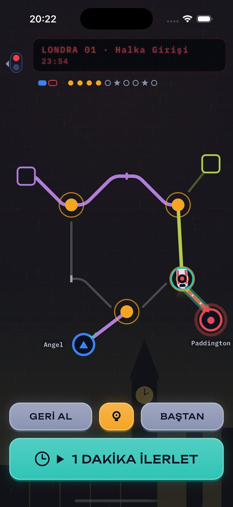
1
Makas ya da sinyal seç
Turuncu makasa dokun: açılacak yeni yol turkuaz parlar, trenin gideceği hedef nabız gibi ışıldar.
Her dakika yalnız bir kontrol değişir. Kapalı kol sönük ve kesik çizilir.
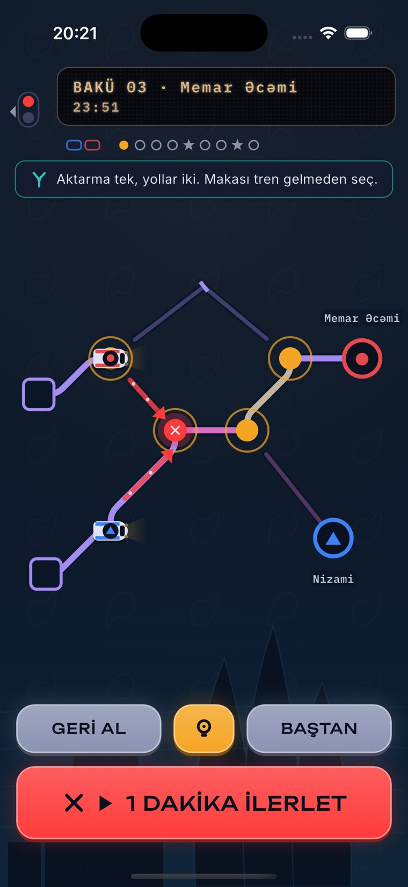
2
Önce gör, sonra bas
Her trenin bir sonraki dakikası kendi renginde okla görünür. Kaza olacaksa oklar kırmızıya döner,
çarpışma noktasında kırmızı çarpı çıkar, kol kırmızı yanar. Önizleme ile gerçek hamle aynı hesaptan gelir.
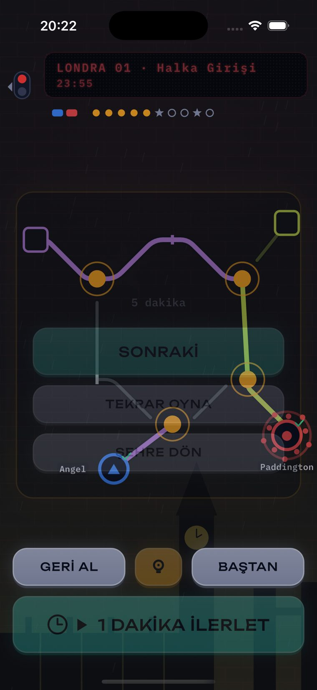
3
1 dakika ilerlet
Bütün trenler aynı anda bir durak gider. Doğru zamanlama küçük bir domino gibi akar; hedefe giren
tren kendi renginde bir ışık patlamasıyla teslim olur. Son tren girince: HAT TEMİZ.
Haksızlık yok
Geri Al ve Baştan sınırsız. Süre sınırı affedici: en kısa çözümün en az 3 dakika fazlası.
Zorluk bölümü bitirmekte değil, altın yıldızda.
Ücretsiz, dürüst ipucu
Ampule bas: çizilmiş el bir sonraki doğru hamleyi gösterir, çözümün tamamını değil. Bedeli parayla değil,
o koşunun 3. yıldızıyla ödenir.
Metroda, tek elle
Dikey ekran, büyük düğmeler, gerçek zamanlı geri sayım yok. İstasyonda inersen oyun bekler;
yarım kalan koşu kaldığın yerden açılır. Tünelde internet gerekmez.
Her bölüm çözülebilir
30 bölümün her biri otomatik çözücüyle doğrulandı; en kısa çözüm biliniyor.
Rastgele üretilmiş, çözümsüz ya da “şansa kalmış” bölüm yok.
NASIL OYNANIR2/6
Dünya · beş şehir, beş karakter
Her şehir yeni bir kural, yeni bir gece.
Her şehrin kendi rengi, elle çizilmiş deseni, silueti, havası ve kendi dilinde selamı var.
Şehir kartı kaydırılınca o şehrin gecesi açılır.
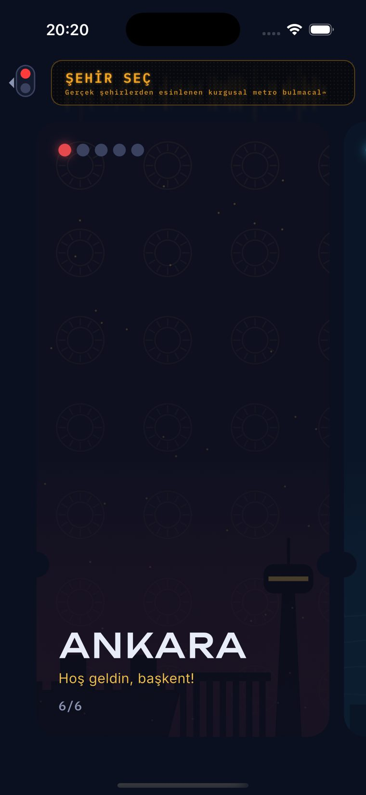
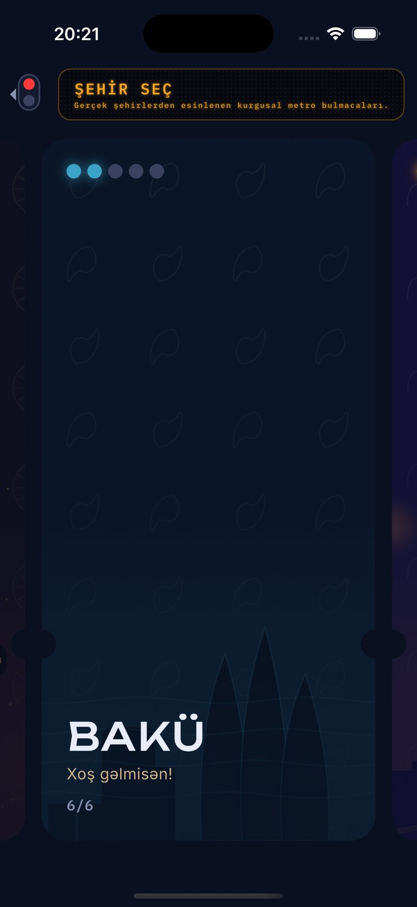
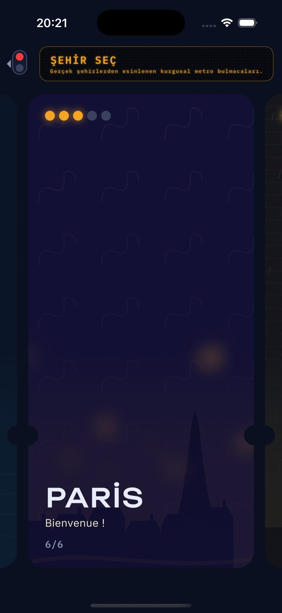
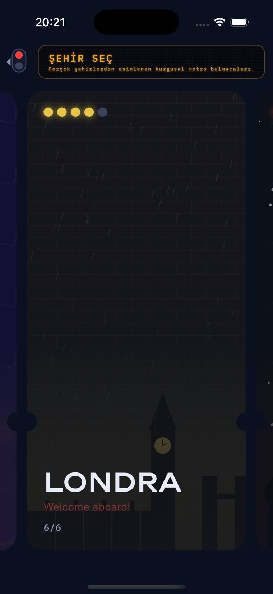
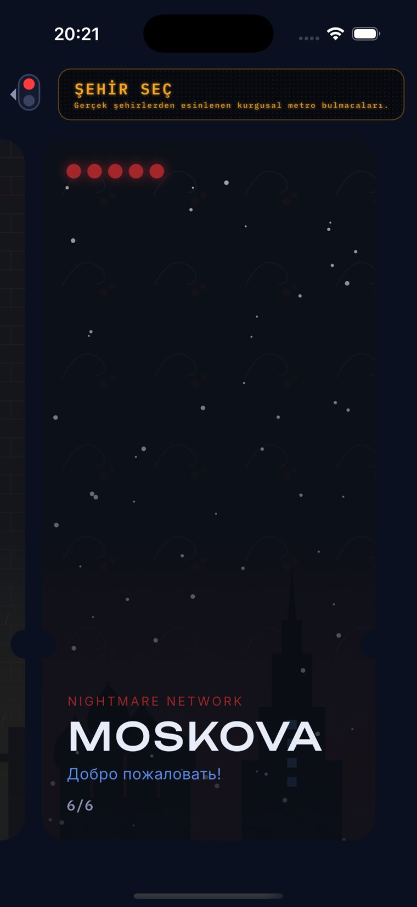
Ankara
Desen: Hitit güneş kursu halkaları
Siluet: kale surları, sütun dizisi, gözetleme kulesi
Hava: havada süzülen toz
Öğretir: makas, dakika, geri al
“Hoş geldin, başkent!”
Bakü
Desen: buta motifi
Siluet: alev kuleleri, Kız Kalesi, eski şehir kemerleri
Hava: Hazar dalgaları
Öğretir: ortak ray, dar boğaz
“Xoş gəlmisən!”
Paris
Desen: Art Nouveau kıvrımları
Siluet: mansard çatılar, gündüz Eyfel çizgisi, Seine
Hava: amber sokak lambaları
Öğretir: sinyal, bekletme
“Bienvenue !”
Londra
Desen: tuğla duvar dizisi
Siluet: saat kulesi, köprü kuleleri, sıra evler
Hava: yağmur
Öğretir: halka, yanlış tur
“Welcome aboard!”
Moskova
Desen: Hohloma kıvrımları ve meyveleri
Siluet: soğan kubbeler, basamaklı gökdelen
Hava: kar
Öğretir: iki halka, dört tren
“Добро пожаловать!”
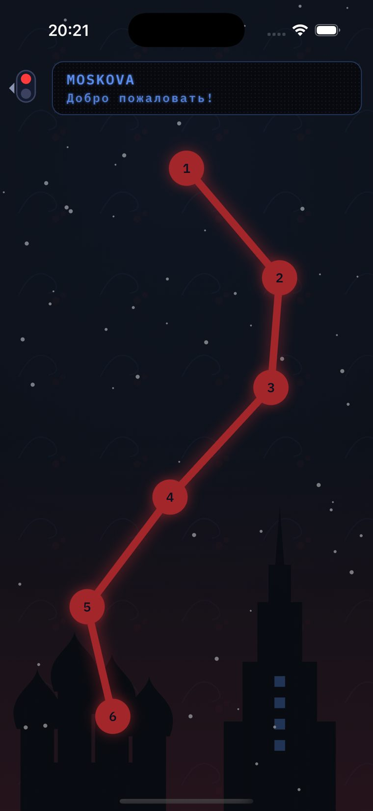
Hat haritası: ilerleme bir metro hattı gibi
Şehrin altı bölümü bir hattın durakları gibi dizilir. Çözülen her bölümde hattın bir parçası
şehrin renginde yanar; son durak yanınca şehir tamamlanır. Kilitli şehirlerin kartında
“HAT YAPIM AŞAMASINDA” şeridi durur.
Tahta da bir metro haritası
Raylar şehrin renklerinde kalın hat şeritleri; çizgiler yalnız yatay, dikey ve 45°, köşeler yuvarlak.
Ara duraklar çentik, depolar çerçeve, çıkmaz uçlar tampon. Hedeflerde gerçek istasyon adları:
Kızılay, 28 May, Châtelet, Paddington, Arbatskaya… Ağlar kurgusal; resmî harita, logo, renk ya da font
kullanılmaz.
BEŞ ŞEHİR3/6
Ödül · his · tatlı detaylar
Metro Pasaportu: her şehir bir damga.
Bir şehrin altı hattı bitince pasaporta o şehrin damgası basılır: hafif eğik, mürekkep yayılarak,
“küt” sesi ve güçlü bir titreşimle. Damganın altında tarih yazar. Beş damga tamamlanınca
Night Dispatcher unvanı: “Gece ağı artık senin.”
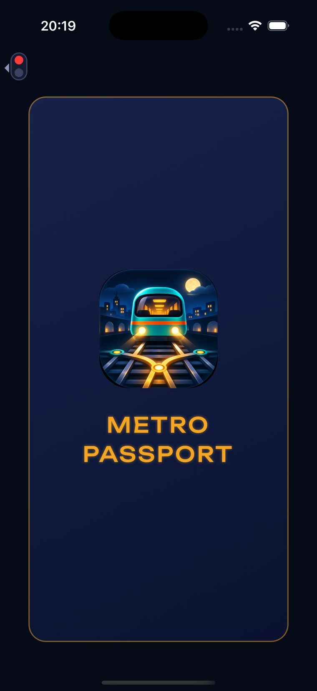
Pasaport kapağı
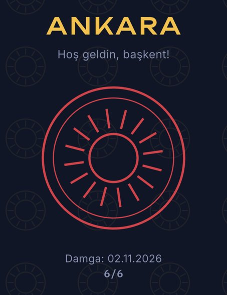
Ankara · güneş kursu
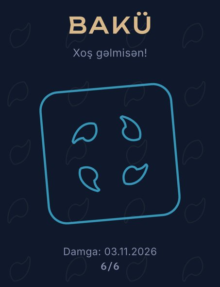
Bakü · buta
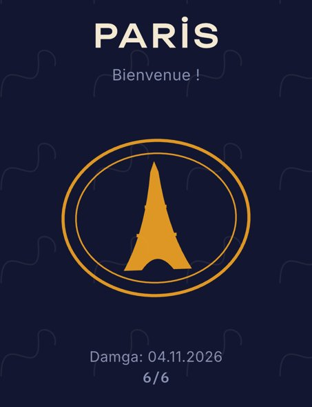
Paris · Eyfel
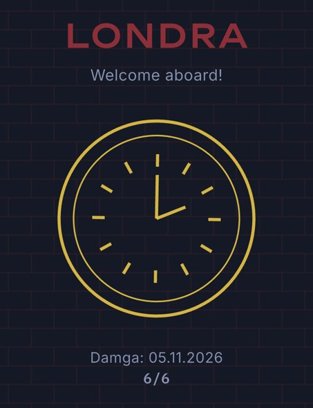
Londra · saat
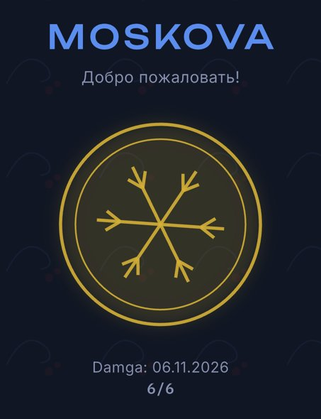
Moskova · altın damga
Animasyon ve efektler
Her dakikadan sonra raylarda bir ışık dalgası yayılır.
Vagonlar elle çizildi: farları yanar, ışık konisi önüne düşer, virajda rayı izleyerek döner.
Önizleme oklarında akan noktalar; teslim edilecek hedef nabız gibi parlar.
Teslimde trenin renginde parçacık patlaması; iki tren aynı dakikada girerse beyaz halka ve çift çan.
Çarpışmada trenler birbirine sokulup geri seker, tahta sarsılır, kırmızı flaş çakar.
Kalkış tabelası split-flap gibi harf harf döner; saat 23:50'den işler.
Sesler ve titreşim
Hepsi özgün ve sentetik: makas “klak”, dakika “tık”, teslim “çan”, çarpışma “bzzt”, bölüm sonu fanfar, damga “küt”.
Telefonun sessiz düğmesine uyar, çaldığın müziği kesmez: kulaklıkla podcast dinlerken de oynanır.
Teslimde iki hafif, çarpışmada tek ağır titreşim.
Ses kapalıyken de oyun tam anlaşılır: her ses aynı anda görülür.
İnce detaylar
Geri tuşu küçük bir sinyal lambası; ayarlardaki anahtarlar birer sinyal.
Dakika sayacı tren jetonları ve noktalarla; par ve par+2'de küçük yıldız işaretleri.
Sinyal direğinin lambası trenin üstünde kalmasın diye yana çekilmiş.
Trenler renkle birlikte ●▲■◆ şekilleriyle ayrılır.
Emoji yok, hazır ikon yok: trenler, damgalar, siluetler elle çizildi.
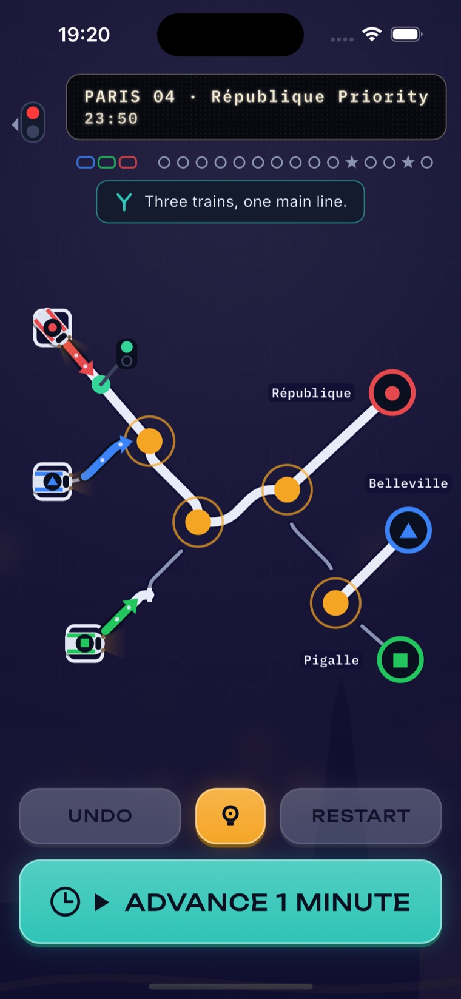
Herkes için
Yüksek kontrast: beyaz kalın raylar, kenarlı oklar.